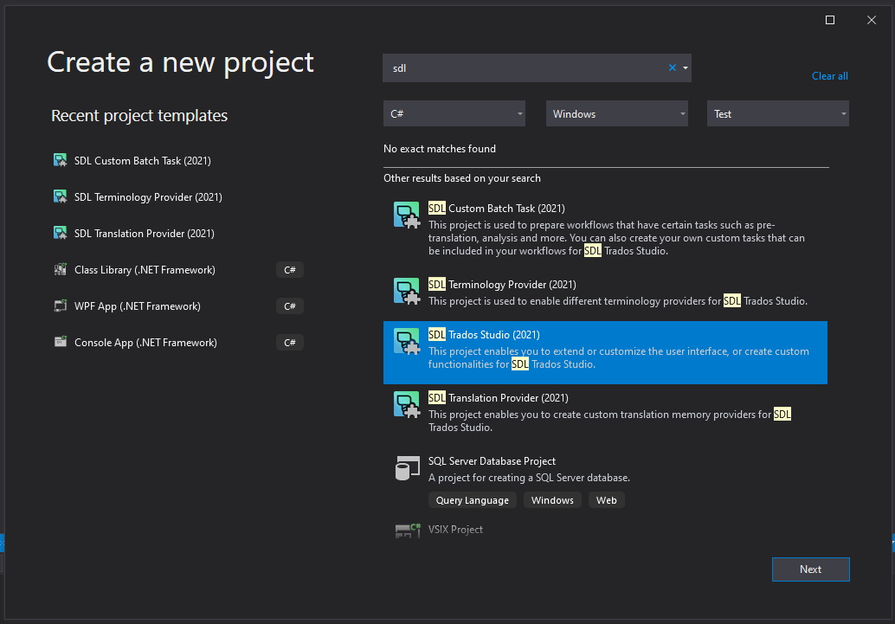

Setting up the Visual Studio Project
This guide walks you through creating a custom display filter plug-in project. You will generate a plug-in that compiles and implements an empty display filter visible in Trados Studio. Initially, it contains no application logic and does not perform any real filtering task.
Create the Visual Studio Project
After installing the Trados Studio SDK, open Microsoft Visual Studio 2022. The following templates appear when you create a new project:

These templates help you set up the skeleton of a Trados Studio plug-in project.
Create a new project using the Trados Studio (2021) project template and name it, for example, AdvancedDisplayFilter.Example.
The Trados Studio (2021) template automates the initial setup phase for your development project. It:
- Includes all standard references to the studio assemblies your project might require
- Adds the plugin manifest and resource files
- Sets the build output path to the correct location in your system's roaming directory
Your project should look like this after creation:
Important
The Trados Studio (2021) template does not automatically add the Sdl.Core.Globalization assembly to the project. This project requires this assembly because it references some of the ISegmentPair enumerators.
To add this assembly, right-click the References node in Solution Explorer and select Add Reference from the context menu. Then navigate to C:\Program Files\Trados\Trados Studio\Studio19 and select Sdl.Core.Globalization.dll.
Sign the solution
Follow these steps to sign your development solution from the project properties area:
- In Microsoft Visual Studio 2022, go to Project > AdvancedDisplayFilter.Example Properties.
- Select the Signing tab.
- Select the Sign the assembly checkbox and choose New… from the Choose a strong name key file combo box.
- In the Create Strong Name Key dialog, provide a name, click OK, and save the project.
After saving the project properties, a new file with the .snk extension appears in your project. This file holds the Strong Name Key details you provided.
Note
Signing the project provides authenticity for the assembly, ensuring the assembly originates from the specified author and preventing tampering. You also need to sign assemblies to include them in the Global Assembly Cache (GAC).